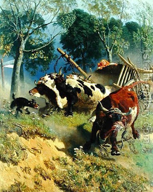

Bava Kamma 35 - Oxen in Hot Pursuit
If an ox was pursuing another ox and the pursued ox was later found damaged, and the damaged party says: "Your ox caused the damage," but the owner of the pursuing ox says, "Not so, rather it injured itself on a rock" - the burden of proof rests on the one who seeks to exact money from his fellow.
If two oxen were pursuing an ox and it was later found damaged, and the owner of one pursuing ox says "Your ox did the damage," but the owner of the other says, "No, your ox did the damage" - both are exempt, because each can shift the blame to the other.